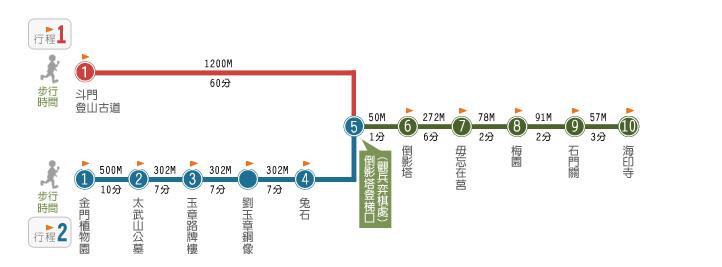
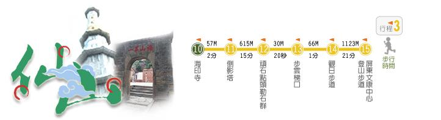
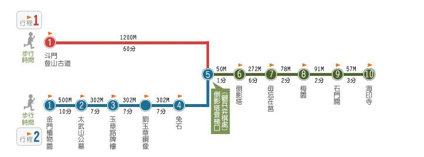
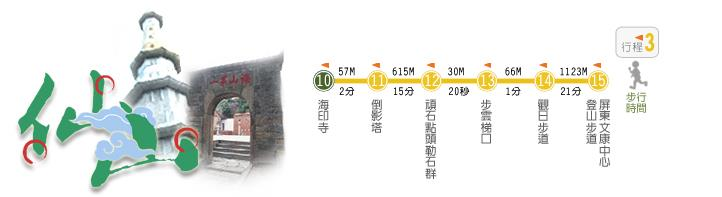

当前位置：
主题之旅
>> 仙山古道之旅
仙山古道之旅
太武山位於金門東半島中部，雄偉莊嚴，由於其形狀有如武士的帽，故以太武山為名。山頂約在東經118度24分，北緯24度27分，海拔高度二百五十三公尺，為金門第一高峰。越江遠望，山形蜿蜒，若仙人倒地之狀，故云：「浯江斷嶼入海水，仙人倒地臥不起。」
因此太武山別稱仙山，俗稱大山。


太武山位於金門東半島中部，雄偉莊嚴，由於其形狀有如武士的帽，故以太武山為名。山頂約在東經118度24分，北緯24度27分，海拔高度二百五十三公尺，為金門第一高峰。越江遠望，山形蜿蜒，若仙人倒地之狀，故云：「浯江斷嶼入海水，仙人倒地臥不起。」
因此太武山別稱仙山，俗稱大山。

